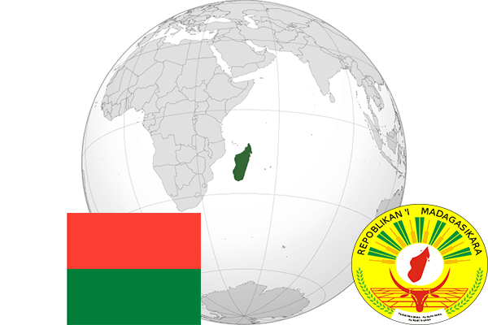

To`liq nomi: Madagaskar Respublikasi
Region: Janubiy-sharqiy Afrika
Qonunchilik shakli: Respublika
Mustaqillik kuni: 26-iyun 1960-yil (Fransiyadan)
Poytaxt: Antananarivu
Maydoni: 587 041 km² (dunyoda 45 -o`rinda )
Chegaradosh davlatlari: yo`q
Aholisi: 24,894,551 (dunyoda 52 - o`rinda, 2016 -yil roʻyxat)
Aholi zichligi: 35,2/km²
Aholining o`rtacha yoshi: 62,15 yil (64,1 ayollar, 60,2 erkaklar)
Rasmiy tili: Malagasi va fransuz tillari
Dini: 50% mahalliy dinlar, 40% xristian, 10% musulmon va buddistlar
Pul birligi: Ariari
Telefon prefiksi: +261
Internet domen: .mg
Xalqaro tashkilotlarga a`zoligi: BMT (1960 – yildan)
Dengiz va okeanlarga chiqishi: Hind okeani
YIM: Butun: $ 40.055 mlrd, Jon boshiga $ 1 563 (2017 - yil roʻyxati)
Yirik shaharlari: Antananarivu